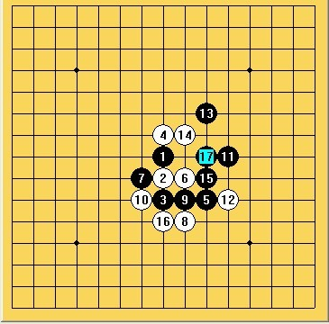

2010年全少赛总结！
#1 2010年全少赛总结！ 作者：浩瀚棋社清清 发表时间：2010-8-21 12:41:52
今天寒假的时候，我偶然发现了QQ五子棋三手2打规则，于是我就迷上了五子棋的这种全新的下法（以前不知道这个东东，是下无禁手的），因为是从无禁手转有禁手嘛，所以我下棋的风格也发生了180度的转变，从那个不经大脑思考就下棋的笨蛋变成了计算感觉型脱谱棋手，因为我不怎么看定式棋谱的，所以每次下棋都是现用脑子，下棋的时候就形成了一种独特的感觉！从次以后，我混迹三手2房间，知名度也有所提高，不少人都看我下棋（虽然不喜欢别人看，因为紧张嘛，但是没办法啊）。还参加了一些网络比赛，而且成绩还不错哈！忘了什么时候了，我在网上看到了去年的全少赛的视频，于是我就产生了一种想去试试的想法，我也告诉了哥哥，哥哥很高兴啊，因为浩翰棋社有人参加全少赛嘛，而且还同时认识了圊籽和小樱，那时我好开心啊，因为我喜欢找同龄人下棋嘛！本来打算和圊籽他们用浩瀚棋社的名义参赛，因为我们都在浩瀚棋社嘛，结果问哥哥，哥哥说叫我改成学校和地区的名义参赛，因为要盖章。
然后，我在学校里负责了五子棋的有关事宜，积极调动同学们对五子棋的热情，希望发现一些有天赋的同学一起去南通，但是进展不大，我只发现了一个，就是象棋队的王林同学（现在我们关系很好呢！）他在五子棋方面相当有天赋，只不过他对五子棋没有多大深入的研究，本来他说要和我一起去的，后来说家长不让，等再锻炼一年再去，我觉得也是，应该让他再学习一下，现在去有点早!
7月20日，我的报名很顺利得完成了，然后我得知了一个很惊人的消息，我竟然是山东历史上第一个参加全少赛的人，当时我也不知道是该高兴还是难过，我对自己成为第一人而有点小兴奋，但是又对山东的五子棋发展感到担忧，毕竟山东的五子棋起步太晚！
8月13日，我叔叔开车走了6个小时把我送到南通，跟我一起办理了报道的有关手续，然后入住了宾馆。当时我知道圊籽已经在宾馆里，但是不知道具体位置，于是我给她发QQ信息，知道了她所在的房间，但是我不敢去，因为我害羞哈，最后没办法了，我给自己壮了壮胆，去找了圊籽，然后我们就在一起玩！
晚上开领队会议，我和圊籽小鬼当家，过了一把领队的瘾，与很多很有名的人近距离接触，尤其是郑秋阿姨就坐了我右边，当时我没敢和她说我洋洋，因为我还是害羞，不知道怎么说。回去了之后，我马上在QQ上和郑阿姨说了，呵呵，麻烦了她一件事！
第2天上午，首先是开幕式，挺无聊的，我一直都在玩手机，没怎么注意他们在讲些什么，大约9点多一点，我和圊籽去3楼参加与知名棋手对弈的活动，我看见那名神秘棋手的时候，我感觉有点眼熟，这时候圊籽告诉我，那是虫子杀手，当时我还是不认识，当他说出江其文这个名字的时候，我才想起来，他是小兰老师全团赛的队友嘛，呵呵！接下来的车轮战，好精彩，虽然我最后不幸落败（我觉得还是可以防住的），但是我左边来自上海的小棋手让我大饱眼福，他开的好像是一个黑优局，持白把江老师砍了，我看了之后好过瘾，然后江老师又与其他棋手下的时候犯了一个错误，对手的一个活三没有挡落败，嘿嘿，没想到江老师也会这样输棋哈！活动结束的时候，我和圊籽向江老师要了签名，呵呵，签的字看样子还不错，虽然有点小！
下午是正式比赛了，这时候我有点小幸运，因为梦妹妹没有报道，原来少年男子组的34人变成了33人，按姓氏排的话，我就是33号了，于是我第一轮不用比赛就取一分，好开心！
第2轮我的对手是最后的亚军蒋哲宇同学，我开了自己很不熟悉的松月，可能看他个子小，有点小看他吧，然后他选择了交换，走了一个我没见过的打点，当时我看了之后就蒙了，因为根本没下过那个点，而且因为是自己实战下得第一盘棋嘛，所以好紧张，手都哆嗦，然后就完全频感觉去下了，最后忘了怎么回事了，好像是防错了一步，被他直接做棋双杀了，唉，可惜了！具体棋谱忘记了！
第3轮，我的对手是陈兴好，从开始下之前就知道他不太会下，尤其是他开了寒星（具体来说寒星我也很陌生），我选择了交换，然后黑11，我走了一个很弱很弱的点（因为我知道他不会计算出白怎么建立优势的），结果真把他给弄死了，因为他12防错了，后来比赛结束之后圊籽说白可以抓，但是我看了看，抓不到，因为黑冲4嘛！

第一比赛日结束，我的成绩还不错，积2分排在第10！
第4轮，我的对手是唐铸, 我选择开了疏星，他交换了，然后我又蒙了，他开了疏星7打（他告诉我
#2 Re:2010年全少赛总结！ 作者：浩瀚棋社清清 发表时间：2010-8-21 12:42:56
 错别字很多啊 洋洋
错别字很多啊 洋洋
#3 Re:2010年全少赛总结！ 作者：浩瀚铭剑 发表时间：2010-8-21 16:46:49
 还是向青子学习学习
还是向青子学习学习
#4 Re:2010年全少赛总结！ 作者：圊籽 发表时间：2010-8-21 17:26:04
？向青子学习？［ 黄药师 于 2010-8-21 21:26:56 时奖励此帖[金币加 20 威望加1］
#5 Re:Re:2010年全少赛总结！ 作者：浩瀚铭剑 发表时间：2010-8-22 0:38:09
引用：
原文由 圊籽 发表于 2010-8-21 17:26:04 :
？向青子学习？［ 黄药师 于 2010-8-21 21:26:56 时奖励此帖[金币加 20 威望加1］
慢慢理解。。。
#6 Re:2010年全少赛总结！ 作者：心上人 发表时间：2010-8-22 8:02:26
好文章，学习#7 Re:2010年全少赛总结！ 作者：王安石 发表时间：2012-1-9 21:26:01
永远支持五子，希望在我们的生活中能经常见到它，达到普及的状态，啊哈哈哈哈哈哈